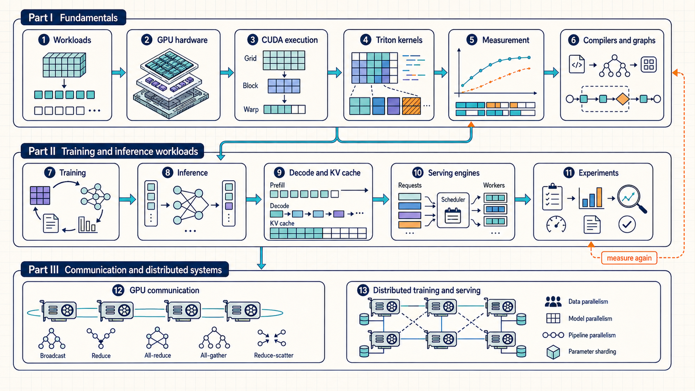
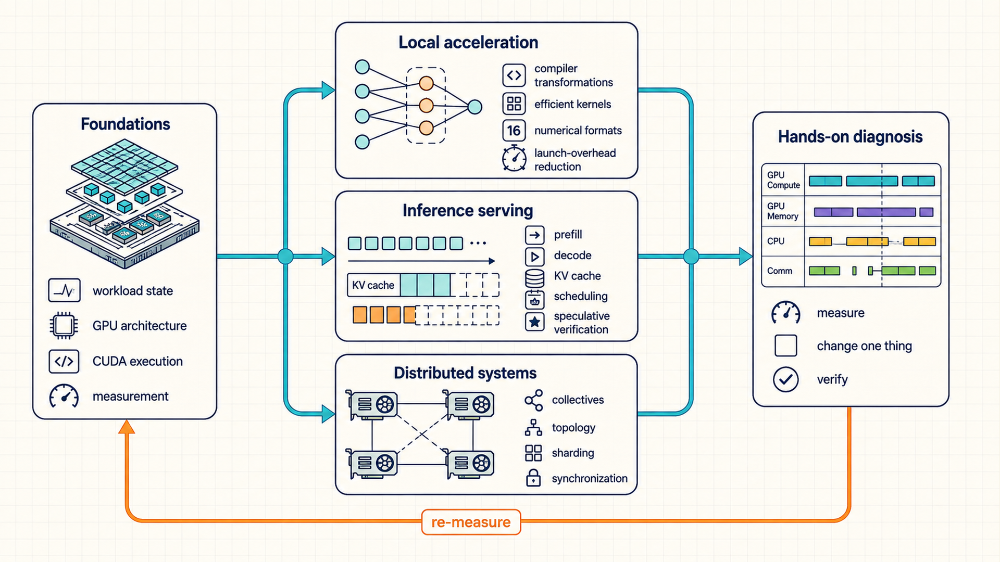

Introduction and Learning Path
Large language model performance is determined by more than the number of floating-point operations. Each training step or inference request creates tensors with different sizes, lifetimes, reuse patterns, and placement constraints. The hardware must move those tensors through a memory hierarchy, execute kernels, and sometimes exchange partial results with other GPUs. A useful optimization starts by identifying the active work and the resource that limits it.
Basic Python and PyTorch familiarity is enough to begin. Chapter 1 introduces the tensors used in training and generation. Chapters 2-4 explain where those tensors are stored and how GPU programs process them. Chapters 5-6 show how to measure that work and reduce compiler and runtime overhead. Equations and code examples support the memory estimates, timing comparisons, and implementations along the way.
Part I covers execution on one GPU. Part II applies those foundations to training and inference serving. Part III examines how GPUs share work and exchange data.

The chapter path is a reading order, not one runtime pipeline. Measurement recurs throughout the guide because every change must be checked in the phase and system where it is expected to help.
After the common foundations, local acceleration, inference serving, and distributed systems can be studied as separate tracks. Each track adds different limits and control points.

The tracks meet again in hands-on diagnosis. A reader can follow one track for immediate work, but reliable optimization still uses the same cycle: measure, change one relevant control, verify the result, and measure again.
What mathematical objects become in a running system
A tensor is an array of numbers, but running an operation also requires storing those numbers and moving them to the processor. Two implementations can compute the same result while moving different amounts of data. For example, reusing weights already available to a group of operations can reduce repeated memory reads. The guide connects the mathematics of each operation to these storage and execution costs.
- State objects first: Chapter 1 defines tensors, parameters, gradients, activations, logits, loss, optimizer state, temporary workspaces, and KV cache. These are the objects that later sections move, store, shard, compress, cache, or reuse.
- Hardware constraints: Chapter 2 explains CPU/GPU roles, streaming multiprocessors, HBM, caches, Tensor Cores, PCIe, NVLink, NVSwitch, host memory, storage, and network tiers. This gives physical meaning to capacity, bandwidth, latency, and alignment limits.
- Software to execution: Chapter 3 first maps the software path and locality scopes, then Chapters 3 and 4 show how CUDA kernels and Triton programs map work to threads, blocks, warps, program instances, tiles, masks, loads, compute, and stores. This is where tensor layout becomes memory traffic and launch structure.
- Measurement: Chapter 5 introduces FLOPs, bytes, arithmetic intensity, roofline bounds, profiler traces, kernel inspection, and symptom reading. Optimization should start here whenever the limiting layer is not already proven.
- Finding the limiting layer: Section 1.5 connects measured symptoms and PyTorch interfaces to the software or hardware component that can change them. CUDA, Triton, profiler, serving, and communication controls then appear with their mechanisms.
- Runtime acceleration: Chapter 6 applies compilation, generated kernels, CUDA Graph replay, and graph-break diagnosis to repeated single-worker GPU work. These techniques are foundations for both training and inference.
- Training and precision: Chapter 7 follows one training step through data delivery, forward/backward work, optimizer state, activation memory, precision, and update throughput. Its final sections separate training-aware precision from deployment quantization.
- Inference systems: Chapters 8 through 11 explain the inference workload, decode and KV-cache mechanics, serving-engine policies, and the measurement practices that validate training and inference changes.
- Distributed optimization: Chapters 12 and 13 separate physical fabrics, backend libraries, collectives, overlap, sharding, tensor parallelism, pipeline parallelism, expert parallelism, and distributed inference so network cost is not confused with local kernel cost.
- Appendices: The appendices collect formulas, software controls, compatibility checks, practice material, source mapping, and the lists of figures and tables. They are lookup aids, not a second explanation path.
Questions for each performance problem
For a slow training step or generation request, work through these questions:
- Which part takes the time: input preparation, GPU computation, token generation, or communication?
- What data does that part read, write, or keep in memory?
- Is it doing arithmetic, moving data, or waiting? Use measurements to distinguish these possibilities.
- Which code, library, or setting can change that work?
- After the change, are the results still correct, is model quality acceptable, and has the original time or throughput target improved under the same workload?
What each main mechanism changes
Some optimizations reduce the work done for each token; others reduce data transfers or keep the GPU from waiting. The right choice depends on which cost dominates the workload being measured.